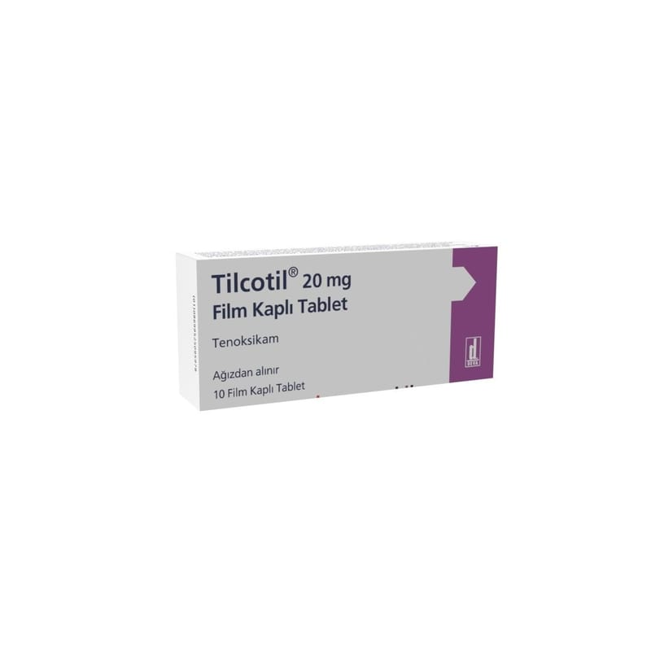

Tilcotil 20 mg Film Kaplı Tablet, 30 Adet

Ne için kullanılır
KT · Bölüm 1TİLCOTİL tenoksikam adı verilen bir ilaç içerir. Tenoksikam, ‘Non-Steroidal Antiinflamatuvar ilaçlar’ (NSAİİ) grubuna bağlı bir ilaçtır. Tenoksikam, ağrı kesici, ateş dürücü ve iltihap giderici özelliğe sahiptir.
TİLCOTİL tabletlerin her biri 20 mg etkin madde içermektedir ve tabletler oval, silindirik, bikonveks ve grimsi sarı renkli görünüşlüdür. TİLCOTİL 20 mg film tablet 10 veya 30 tablet içeren ambalajlarda sunulmaktadır. TİLCOTİL, kireçlenme (osteoartrit), eklemlerde ağrı ve şekil bozukluğuna neden olan romatoid artrit hastalığı ve sırt eklemlerinde sertleşme ile seyreden ağrılı ilerleyici bir romatizmal hastalık olan ankilozan spondilitin belirti ve bulgularının tedavisi ile damla hastalığı (akut gut artriti), akut kas iskelet sistemi ağrıları, ameliyat sonrası ağrı ve ağrılı adet tedavisinde etkilidir.